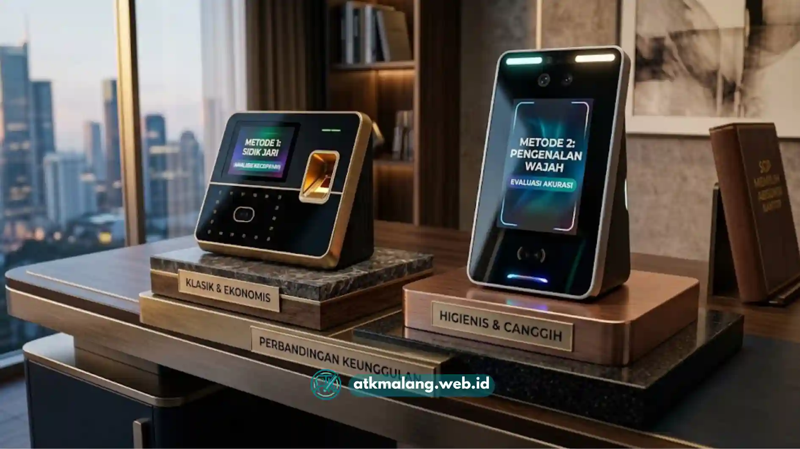

Memilih mesin absensi kantor yang tepat berarti mencocokkan jenis teknologi, kapasitas pengguna, dan sistem integrasi payroll dengan kebutuhan operasional harian kantor, bukan sekadar membeli perangkat dengan harga termurah.
- Ada tiga jenis mesin absensi utama: fingerprint, face recognition, dan kartu RFID, masing-masing dengan kelebihan dan keterbatasan berbeda.
- Kapasitas pengguna dan kecepatan proses absensi menjadi pertimbangan penting bagi kantor dengan jumlah karyawan menengah hingga besar.
- Integrasi dengan sistem payroll dan software HR mengurangi pekerjaan manual rekap kehadiran.
- Faktor lingkungan kerja di Malang, seperti kelembapan dan mobilitas karyawan lapangan, memengaruhi pilihan jenis sensor.
- SOP pemilihan yang terstruktur membantu HRD menghindari pembelian yang tidak sesuai kebutuhan jangka panjang, melengkapi kebutuhan Alat Tulis Kantor Anda.
Daftar Isi
Apa Itu Mesin Absensi Kantor dan Mengapa Penting?
Mesin absensi kantor adalah perangkat yang mencatat waktu kedatangan dan kepulangan karyawan secara otomatis menggunakan metode verifikasi seperti sidik jari, wajah, atau kartu identitas elektronik. Perangkat ini bagian dari peralatan kantor modern.
Perangkat ini penting karena menggantikan pencatatan manual yang rawan kesalahan dan manipulasi data. Bagi HRD, mesin absensi menjadi dasar perhitungan jam kerja, lembur, dan kepatuhan terhadap kebijakan perusahaan, bersinergi dengan sistem manajemen perkantoran lainnya layaknya pengadaan Alat Tulis Kantor yang baik.
Data yang tercatat secara digital juga lebih mudah diaudit ketika terjadi perselisihan terkait kehadiran karyawan. Di lingkungan kantor modern, mesin absensi umumnya terhubung ke sistem payroll sehingga proses penggajian dapat berjalan lebih cepat dan minim kesalahan input manual.
Apa Saja Jenis Mesin Absensi Kantor yang Tersedia?
Tiga jenis mesin absensi yang paling umum digunakan kantor saat ini adalah fingerprint scanner, face recognition, dan kartu RFID, dengan perbedaan pada metode verifikasi dan tingkat keamanan.
Mesin Absensi Fingerprint
Mesin fingerprint membaca pola sidik jari karyawan sebagai identitas unik. Jenis ini populer karena harganya relatif terjangkau dan proses verifikasinya cepat untuk kantor dengan jumlah karyawan kecil hingga menengah.
Keterbatasannya muncul ketika kondisi jari karyawan basah, kotor, atau terluka, karena sensor dapat gagal membaca pola dengan akurat. Situasi ini cukup relevan untuk kantor dengan karyawan lapangan atau produksi yang tangannya sering terpapar kotoran.

Berbagai tipe mesin absensi karyawan yang tersedia di pasaran untuk kebutuhan bisnis.Mesin Absensi Face Recognition
Mesin face recognition memverifikasi identitas melalui pemindaian wajah tanpa kontak fisik. Jenis ini semakin diminati karena lebih higienis dan tidak bergantung pada kondisi kulit tangan.
Namun, akurasi face recognition dapat menurun pada pencahayaan yang kurang memadai atau ketika karyawan mengenakan masker maupun aksesori yang menutupi wajah. Kantor perlu memastikan area penempatan mesin memiliki pencahayaan yang stabil.
Mesin Absensi Kartu RFID
Mesin RFID menggunakan kartu identitas elektronik yang ditempelkan ke pembaca kartu. Metode ini cocok untuk kantor dengan jumlah karyawan besar karena prosesnya cepat dan tidak bergantung pada kondisi biometrik.
Kelemahan utamanya adalah risiko kartu hilang, rusak, atau dipinjamkan ke rekan kerja lain, yang dapat menimbulkan potensi kecurangan absensi jika tidak diawasi dengan kebijakan yang jelas. Pastikan Anda memiliki kelengkapan Alat Tulis Kantor pendukung seperti lanyard dan tempat kartu ID.
Apa Kriteria Utama Memilih Mesin Absensi Kantor?
Kriteria utama meliputi kapasitas pengguna, kecepatan verifikasi, kemudahan integrasi sistem, ketahanan perangkat, dan kesesuaian anggaran kantor dengan kebutuhan jangka panjang.
Kapasitas dan Jumlah Pengguna
HRD perlu memastikan mesin absensi mampu menampung jumlah data karyawan sesuai skala kantor, termasuk proyeksi penambahan karyawan di masa mendatang. Mesin dengan kapasitas terbatas berisiko mengalami penurunan performa atau kegagalan sistem ketika jumlah pengguna melebihi batas yang direkomendasikan produsen.
Kecepatan dan Akurasi Verifikasi
Kecepatan proses absensi menjadi penting terutama pada jam sibuk seperti pagi hari saat karyawan datang bersamaan. Mesin dengan waktu respons lambat dapat menyebabkan antrean panjang di pintu masuk kantor.
Integrasi dengan Sistem Payroll dan HR
Mesin absensi yang dapat terhubung langsung ke software payroll atau sistem HR mengurangi kebutuhan rekap data manual. Kompatibilitas format data ekspor, seperti Excel atau API langsung ke sistem HR, perlu dicek sebelum pembelian.
Ketahanan Perangkat terhadap Kondisi Lingkungan
Kantor dengan lokasi yang lembap, berdebu, atau memiliki mobilitas karyawan lapangan perlu mempertimbangkan ketahanan perangkat terhadap kondisi tersebut. Mesin dengan sertifikasi ketahanan tertentu umumnya lebih tahan lama pada lingkungan kerja yang kurang ideal.
Kesesuaian Anggaran
Harga mesin absensi bervariasi tergantung merek, fitur, dan kapasitas. HRD sebaiknya membandingkan total biaya kepemilikan, termasuk biaya instalasi, lisensi software, dan perawatan berkala, bukan hanya harga beli awal, sama seperti saat menganggarkan pengadaan Alat Tulis Kantor rutin.
Bagaimana Tahapan SOP Memilih Mesin Absensi Kantor?
Tahapan SOP meliputi identifikasi kebutuhan, riset spesifikasi, perbandingan vendor, uji coba perangkat, dan evaluasi setelah penggunaan berjalan.
Tahap 1, Identifikasi Kebutuhan Kantor: HRD perlu memetakan jumlah karyawan, pola kerja (tetap atau shift), serta karakteristik lingkungan kerja sebelum menentukan jenis mesin yang paling sesuai.
Tahap 2, Riset Spesifikasi dan Fitur: Pada tahap ini, bandingkan spesifikasi teknis seperti kapasitas pengguna, metode verifikasi, dan kompatibilitas software antar beberapa merek mesin absensi.
Tahap 3, Perbandingan Vendor dan Layanan Purnajual: Vendor yang menyediakan layanan instalasi, garansi, dan dukungan teknis yang responsif umumnya lebih menguntungkan dalam jangka panjang dibandingkan vendor dengan harga murah tanpa layanan purnajual yang jelas.
Tahap 4, Uji Coba Perangkat: Sebelum pembelian dalam jumlah besar, sebaiknya lakukan uji coba pada satu unit untuk menilai kecepatan, akurasi, dan kemudahan penggunaan oleh karyawan.
Tahap 5, Evaluasi Berkala Setelah Implementasi: Setelah mesin digunakan, HRD perlu mengevaluasi performa secara berkala, termasuk tingkat kegagalan verifikasi dan keluhan karyawan, untuk memastikan perangkat tetap sesuai kebutuhan operasional.
Kesalahan Umum yang Perlu Dihindari
Kesalahan yang sering terjadi antara lain memilih mesin hanya berdasarkan harga termurah, mengabaikan kompatibilitas sistem payroll, dan tidak mempertimbangkan kondisi lingkungan kerja secara spesifik.
Kesalahan lain adalah tidak menyusun kebijakan penggunaan yang jelas, seperti aturan terkait kartu RFID yang dipinjamkan atau prosedur ketika mesin biometrik gagal membaca data karyawan tertentu. Tanpa kebijakan pendukung, keberadaan mesin absensi tidak akan optimal mencegah kecurangan kehadiran.
Pemilihan mesin absensi kantor yang tepat memerlukan pendekatan sistematis, mulai dari memahami jenis teknologi yang tersedia, menyesuaikan dengan kondisi lingkungan kerja di Malang, hingga memastikan integrasi dengan sistem payroll berjalan lancar. HRD disarankan mengikuti SOP bertahap, mulai dari identifikasi kebutuhan hingga evaluasi pasca-implementasi, agar investasi perangkat memberikan manfaat jangka panjang bagi efisiensi pengelolaan kehadiran karyawan, selaras dengan pemenuhan Alat Tulis Kantor yang prima.